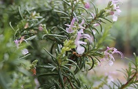
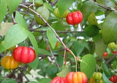
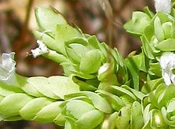
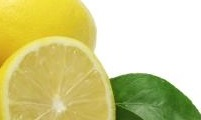
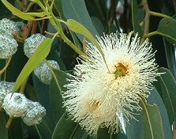
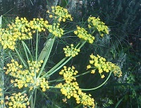
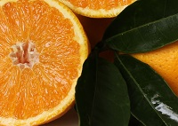
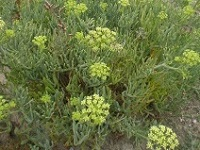

Hydrolats
Aromatic waters co-produced during steam distillation of essential oils, retaining the water-soluble compounds and gentle character of each botanical.

Rosemary Hydrolat
Pure leaf hydrolat of Rosmarinus officinalis, sourced from Portugal.

Surinam Cherry Hydrolat
Pure leaf hydrolat of Eugenia uniflora, sourced from Portugal.

Oregano Hydrolat
Pure leaf hydrolat of Origanum vulgare, sourced from Portugal.

Lemon Hydrolat
Pure fruit peel hydrolat of Citrus x limon, sourced from Portugal.

Eucalyptus Hydrolat
Pure leaf and twig hydrolat of Eucalyptus globulus, sourced from Portugal.

Sweet Fennel Hydrolat
Pure dry seed hydrolat of Foeniculum vulgare var. dulce, sourced from India.

Sweet Orange Hydrolat
Pure fruit peel hydrolat of Citrus x sinensis, sourced from Portugal.

Samphire (Sea Fennel) Hydrolat
Pure leaf hydrolat of Crithmum maritimum, sourced from Portugal.